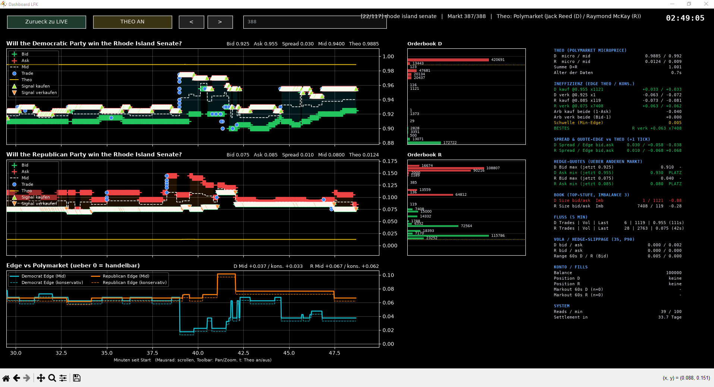

Overview
Trading tools built for the Susquehanna Predictions Cup. A DOM ladder, a live dashboard and a market making scanner compare the exchange prices against the Polymarket fair value to find mispricings and to decide which markets are worth quoting.
Highlights
• DOM ladder for both contracts with the Polymarket fair value drawn at its exact price
• Live dashboard with best bid, best ask, mid and trades, the edge versus fair value, and buy, sell and arbitrage signals
• MM scanner that scores every market on spread, trade flow and fair value to show where quoting makes sense
• Realtime order book feed with REST fallback, kept within the API read limit